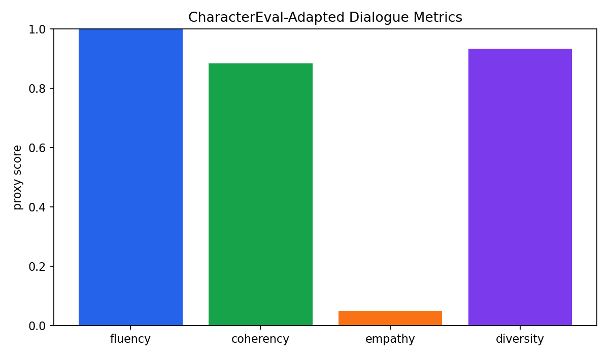
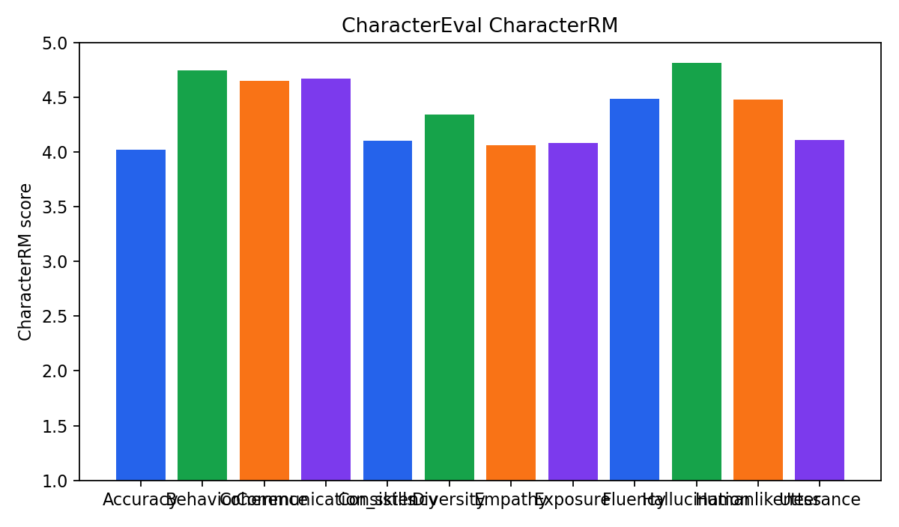
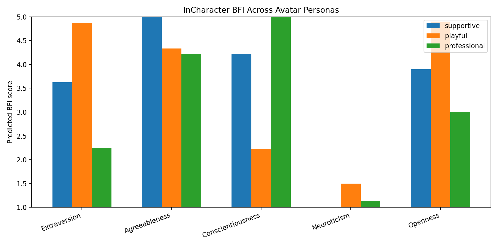

InCharacter self-report uses official BFI scoring rules. CharacterEval output is converted to official generation/generation_trans format; official CharacterRM scoring requires local BaichuanCharRM weights.
Benchmark: CharacterEval Provider: openai
| count | 60 |
|---|---|
| fluency_proxy | 1.0 |
| coherency_proxy | 0.8833 |
| empathy_proxy | 0.05 |
| expression_diversity_proxy | 0.9333 |
| warning_rate | 0.0333 |
| llm_fallback_rate | 0.0 |
| metric_tag_coverage | {"Accuracy": 60, "Behavior": 22, "Coherence": 17, "Communication_skills": 19, "Consistency": 17, "Diversity": 17, "Empathy": 17, "Exposure": 16, "Fluency": 16, "Hallucination": 16, "Humanlikeness": 17, "Utterance": 18} |
| charrm_status | "not_run; use CharacterEval BaichuanCharRM weights to produce official reward-model scores" |
| reporting_boundary | "CharacterEval-adapted dialogue metrics; not official CharacterRM score." |
| character_rm | {"count": 36, "available_count": 252, "max_records_per_metric": 3, "device": "cuda", "scores": {"Accuracy": 4.0208, "Behavior": 4.7448, "Coherence": 4.651, "Communication_skills": 4.6667, "Consistency": 4.1042, "Diversity": 4.3385, "Empathy": 4.0625, "Exposure": 4.0781, "Fluency": 4.4844, "Hallucination": 4.8125, "Humanlikeness": 4.474, "Utterance": 4.1094}, "reporting_boundary": "Official CharacterEval CharacterRM scores for the generated adapted HAI responses."} |
Benchmark: InCharacter Provider: openai
| count | 132 |
|---|---|
| persona_count | 3 |
| question_count_per_persona | 44 |
| aggregate_macro_mae | 0.5053 |
| aggregate_direction_accuracy | 1.0 |
| per_persona | {"supportive": {"count": 44, "parsed_count": 44, "parse_failure_rate": 0.0, "warning_rate": 0.0, "llm_fallback_rate": 0.0, "macro_mae": 0.5094, "direction_accuracy": 1.0, "dimension_scores": {"Extraversion": {"answered_items": 8, "predicted_bfi_1_to_5": 3.625, "target_bfi_1_to_5": 3.2, "absolute_error": 0.425}, "Agreeableness": {"answered_items": 9, "predicted_bfi_1_to_5": 5.0, "target_bfi_1_to_5": 4.4, "absolute_error": 0.6}, "Conscientiousness": {"answered_items": 9, "predicted_bfi_1_to_5": 4.2222, "target_bfi_1_to_5": 3.8, "absolute_error": 0.4222}, "Neuroticism": {"answered_items": 8, "predicted_bfi_1_to_5": 1.0, "target_bfi_1_to_5": 1.8, "absolute_error": 0.8}, "Openness": {"answered_items": 10, "predicted_bfi_1_to_5": 3.9, "target_bfi_1_to_5": 3.6, "absolute_error": 0.3}}, "reporting_boundary": "InCharacter BFI self-report style adapted run; comparable method, not full official interview evaluator."}, "playful": {"count": 44, "parsed_count": 44, "parse_failure_rate": 0.0, "warning_rate": 0.0, "llm_fallback_rate": 0.0, "macro_mae": 0.6372, "direction_accuracy": 1.0, "dimension_scores": {"Extraversion": {"answered_items": 8, "predicted_bfi_1_to_5": 4.875, "target_bfi_1_to_5": 4.2, "absolute_error": 0.675}, "Agreeableness": {"answered_items": 9, "predicted_bfi_1_to_5": 4.3333, "target_bfi_1_to_5": 3.8, "absolute_error": 0.5333}, "Conscientiousness": {"answered_items": 9, "predicted_bfi_1_to_5": 2.2222, "target_bfi_1_to_5": 2.8, "absolute_error": 0.5778}, "Neuroticism": {"answered_items": 8, "predicted_bfi_1_to_5": 1.5, "target_bfi_1_to_5": 2.4, "absolute_error": 0.9}, "Openness": {"answered_items": 10, "predicted_bfi_1_to_5": 4.9, "target_bfi_1_to_5": 4.4, "absolute_error": 0.5}}, "reporting_boundary": "InCharacter BFI self-report style adapted run; comparable method, not full official interview evaluator."}, "professional": {"count": 44, "parsed_count": 44, "parse_failure_rate": 0.0, "warning_rate": 0.0, "llm_fallback_rate": 0.0, "macro_mae": 0.3694, "direction_accuracy": 1.0, "dimension_scores": {"Extraversion": {"answered_items": 8, "predicted_bfi_1_to_5": 2.25, "target_bfi_1_to_5": 2.4, "absolute_error": 0.15}, "Agreeableness": {"answered_items": 9, "predicted_bfi_1_to_5": 4.2222, "target_bfi_1_to_5": 3.6, "absolute_error": 0.6222}, "Conscientiousness": {"answered_items": 9, "predicted_bfi_1_to_5": 5.0, "target_bfi_1_to_5": 4.6, "absolute_error": 0.4}, "Neuroticism": {"answered_items": 8, "predicted_bfi_1_to_5": 1.125, "target_bfi_1_to_5": 1.6, "absolute_error": 0.475}, "Openness": {"answered_items": 10, "predicted_bfi_1_to_5": 3.0, "target_bfi_1_to_5": 3.2, "absolute_error": 0.2}}, "reporting_boundary": "InCharacter BFI self-report style adapted run; comparable method, not full official interview evaluator."}} |
| reporting_boundary | "Expanded InCharacter BFI self-report across multiple personas; not full interview evaluator." |


